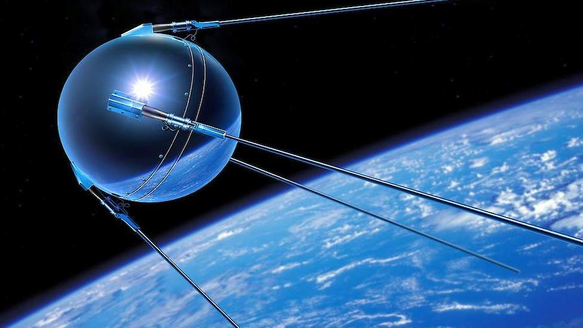

De geschiedenis van het internet begon in 1957. Rusland lanceerde de
Spoetnik 1. Dit is een kunstamtige satalliet die in een baan om de Aarde
werd gebracht. Hierdoor richte de concurent Amerika een onderzoeksbureau
op de technologie te verbeteren. Een van de dingen die ze maakte was een
computernetwerk dat stabiel was en niet afluisterbaar. Het was ervoor
bedoeld om een veilige manier te implementeren die ervoor moest zorgen dat
de universiteiten die voor het bureau aan het werk varen veilig met elkaar
kondern communiceren. In 1969 was het eerste internet een feit.

Favoriete sport: Fitness
Mijn favoriete sport is fitness. Ik ga meestal 2x in de week naar de sportschool in Sneek. Als ik ga sporten doe ik het liefst krachttraining maar ik doe ook 1x in de week crossfit/uithoudingsvermoging.